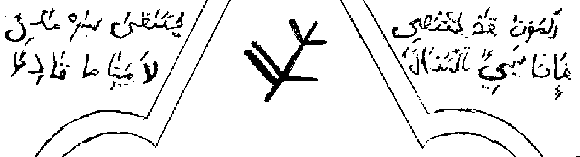
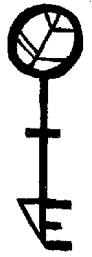

THE BOOK OF THE KEY
THE BOOK OF THE KEY
Concerning the use of the Great Key
And
The Labyrinths of Zin
Contents
I. Concerning the Great Key
II. Concerning the Doors
III. Concerning the Construction Of The Key
IV. Concerning the Doors and the Unlocking
V. Concerning Zin
VI. Concerning the Methods of Departure
VII. Concerning What Has Been Discovered in Zin
I. Concerning the Great Key
According to the Arab, ìTo Enter Zin One need only Will It on the Edge of Sleep.ÅEHowever, he also states that a glyph that he calls the Great Key may be used as it ìwill Help the Journey to Zin If the Doors are Unlocked with It Silver.ÅEUnfortunately, he gives no clue as to the use of the glyph, neither does he give us a clue about the nature of the doors to be unlocked or how the journey will be aided - Will it be quickened? For willing it on the edge of sleep is slow and can take many nights to achieve success. Will it be safer? For many a man has died screaming in his sleep as the ghasts of Zin chew at his dream-flesh. Will it be held in the mind? For many an experience in Zin is shuttered by the mind in order that one's sanity be preserved.
It has been proven that it shall do all three if it is used in the correct manner - if it is not then you will find yourself failing to enter Zin, or else with a false confidence that will surely lead you to your death. First we shall examine the Great Key and it shall be shown that the Arab fashioned it that it shall aid and protect the magician. Note first that at the top of the key is the Elder Sign, which most evil creatures hold a fear of and that fear is greatest in the ghasts of Zin, for in their darkness they wait and think about bygone times when the chaos of the Old Creatures was the supreme Power. They look to Nuíak-Batur, their dark Lord and remember those antediluvian times and then they remember the Elder Sign, the great sign of warding which seals Zinís vaults. Should the ghasts come to you then you shall show them the Elder Sign and they will remember and turn away.
Now you shall look at the cross bar on the key - the four elements - the symbol of manifestation. In travelling through Zin, being between the waking and dreaming worlds, you shall be the fifth element and so should carry the representation of the other elements with you to maintain the balance that would otherwise endanger your mind.
Finally the bottom of the key, which has been fashioned by the Arab so that it shall fit the Doors of which he has spoken of.
II. Concerning the Doors
The Arab speaks of Doors that shall be opened with The Key. To understand the Doors we must understand the nature of Zin. Zin lies in the Dreamlands, beneath an ancient and nameless city inhabited by fearsome giants who also remember the times of the Old Creatures, but recall the Elder Sign not. The gate that lies in the city, which leads to Zin, has long been sealed and cannot be undone, though it is not known who did this. Therefore it is not possible to enter Zin through the Dreamlands - even if it were, it would be very dangerous, for the beasts of the city without name know no compassion. Another way to enter Zin must be found and was indeed found by the Arab.
The Doors are an alternative path to the Dreamlands, the other path being the seven-hundred steps to the Gate of Deeper Slumber. The amount of Doors which shall be passed through is not fixed, but you shall keep travelling until the darkness of Zin does manifest itself, which may be after as few as two Doors or as many as eight Doors. Whilst speaking of the Doors I shall explain that it has been found that the Doors can take the magician anywhere he wishes in the Dreamlands, should he posses the correct key.
III. Concerning the Construction Of The Key
It was written that the Great Key ìwill Help the Journey to Zin If the Doors are Unlocked with It Silver.ÅEThe final word is the clue to the construction. In order that one should reach Zin, the Great Key shall be created Silver in colour. If the Key is created in a different colour then the results will be quite different - who could forget the terrible fate of he who used the golden key? But it must be asked, how does one create the Great Silver Key, or the Key To Zin?
Firstly we shall look at the Keyís composition. The Key shall be composed of Silver, the metal of the Moon. It shall shine as such in the darkness of Zin and aid in your protection, for the ghasts fear light as well as the Elder Sign. Now we shall discuss the creation of the Key To Zin. The magician shall lie in a comfortable place, his robes loose and an appropriate incense shall burn. He shall lie and relax that the body becomes heavy and the mind becomes clear. He shall see darkness. In the darkness, he shall form the shape of the Great Key, having committed itís form to memory. Then he shall see the rays of the Moon being cast its light upon the Key, gradually turning it Silver. Now that the Key has been created you shall start opening the Doors that shall take you to Zin.
IV. Concerning the Doors and the Unlocking
Once the Key has been created, behind it shall be made a Door. The structure of the Door matters not, only that it shall be large enough for a man to pass through. The Key shall be placed upon the door and held in front of it until the Door opens. Then you shall pass through. Should you pass through to be before another Door, then you shall take the Key and unlock it in the way which I have told of and pass through it again. You shall keep passing through these Doors
V. Concerning Zin
In Zin, you shall have the Key to light your way and as a defence against the ghasts that dwell there. The ghasts shall always be near - they shall be in the shadows of Zinís colossal halls, they shall be behind you in Zinís tight crawls - you shall never escape them until you have left the place. Zin is a great labyrinth, full of terror and also full of wonder, many things can be found in Zinís ruined vaults. It has been written by the Arab that ìthe slumbering wills of the inhabitants do create ZinÅE this is to say that whatever you seek in Zin, you shall find if your will to find it is great enough. Upon entering the great halls of Zin you shall be in the centre of the structure, which extends in all directions until the bounds of infinity are met and passed. Then you shall be able to explore Zin and to go where you must. If you should seek something specific then you shall go and find it, hidden in the darkest areas of Zin are wonderful things - beautiful fountains in dusty ruins, many old and forgotten books left to moulder and gates to places to terrible to contemplate or too beautiful to behold. If you should find yourself in fear, lost or in trouble then I advise that you shall use haste in leaving Zin as quickly as possible before you endanger yourself. The dangers of Zin cannot be stressed enough.
VI. Concerning the Methods of Departure
In order that you shall depart from Zin and close the gates it is important that you leave as I set down. In your half dreaming state, many gates are open to Zin, through which terrible things may come. You should once more take the key and you should let the keyís colour radiate and glow with more and more intensity, until naught can be seen but one colour. Then the colour shall fade away and you shall be free to return to your own sphere of living. If you feel that some of Zinís denizens may have passed through the dreaming gate, then make no hesitation in banishing them with all of your might.
VII. Concerning What Has Been Discovered in Zin
In this final chapter I shall tell of what has been discovered and how things shall be discovered. As was stated in part V, Concerning Zin, you need only will to find discover things in Zin. But, what must be willed for? Immaterial things must only be sought, things such as knowledge and power and not items such as gold and silver. But how shall these things be found? You shall wander Zin's lofty halls and you shall be seeking what you desire. Eventually, you shall find it, unless the ghasts do prevent you. When you find it do not be surprised, but take a look at the place you have found. Whilst searching for a way to power I came upon a ruined throne room. The huge, toppled statue of a king of old lay in the centre. Whatever had caused it to topple had also caused the head to split from the statue, the head now faced the wall. This was a revelation associated with my will for power. On another occasion when I sought after knowledge of the universe I found myself crawling in a tight maze. I soon realised that I was lost. The realisation that I was lost allowed me to find a way out, which led to a long tunnel. On each side of the tunnel were dark holes, gates to other places. This was the Great Hall of Zin, a place that I can now enter by a will to find the Great Hall. Each of the black gates will reveal a vision to the magician, which may be beautiful or horrific. So you shall walk the Vaults of Zin, seeking what you will, but you must always remember that it is very dangerous and you should keep the key with you at all times to turn the ghasts should they approach.
Yogg-Sothothe Neblod Zin
Frater Kaymog Azrhm

THE GREAT KEY